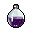
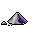
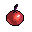
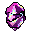
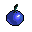
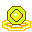
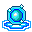
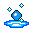

Forja e gemas
Como abrir sockets, combinar gemas e forjar equipamentos, com as chances e custos reais deste servidor.
1. Socket
Abre um espaço para gema no equipamento. Até 3 por peça.
2. Combinar
Duas gemas iguais viram uma de nível acima.
3. Forjar
Coloca a gema (com uma Refining Gem) no socket e sobe o nível dela.
Onde fazer
| Ferreiro | Onde | Faz |
|---|---|---|
| Blacksmith - Goldie | Argent (2193, 2706) | Socket, Combinar, Forjar |
| Blacksmith - Smithy | Shaitan (902, 3495) | Socket, Forjar |
| Grocery - Amos | Shaitan (840, 3585) | Combinar |
| Blacksmith - Bash | Icicle (1344, 529) | Socket, Forjar |
| Blacksmith - Uncle Jin | Dream Island | Forjar, Socket (no menu: "Fusion") |
| Physician - Strong | Dream Island | Combinar |
1. Abrir socket
- Fale com um ferreiro e escolha Socket.
- Coloque o equipamento, um

Equipment Stabilizer e um
Equipment Catalyst (os dois na aba Forging da Store, 150 mil cada). - Pague o gold: 50 mil × (sockets que a peça já tem + 1): 50 mil o 1º, 100 mil o 2º, 150 mil o 3º.
Sempre funciona (100%). Máximo de 3 sockets por peça. Apparels (visuais) não aceitam socket nem gema.
2. Combinar gemas
- Fale com um ferreiro que Combina (Goldie ou Amos).
- Coloque um Gem Composition Scroll (vende no Amos de Shaitan e no Strong da Dream Island) e duas gemas iguais, do mesmo nível.
- Custa 5 mil de gold.
| Subir para o nível | 2 | 3 | 4 | 5 | 6 | 7 | 8 | 9 |
|---|---|---|---|---|---|---|---|---|
| Gema de atributo | 100% | 90% | 80% | 70% | 60% | 50% | 40% | 30% |
| Refining Gem | 100% | 100% | 100% | 95% | 90% | 85% | 80% | 75% |
Se falhar, as duas gemas somem. As gemas vão até o nível 9 (as do Black Dragon até o 2).

3. Forjar (engastar e subir a gema)
- Fale com um ferreiro e escolha Forge.
- Coloque o equipamento (com socket livre ou já com aquela gema), a gema e uma

Refining Gem. - As duas gemas precisam ter nível ≥ ao próximo nível do socket: para levar um socket de Gem of Rage do nível 2 ao 3, gema de nível 3+ e Refining Gem de nível 3+.
- Pague: 100 mil × (1 + soma dos níveis das gemas já engastadas na peça).
| Forjar até o nível | 1–3 | 4 | 5 | 6 | 7 | 8 | 9 |
|---|---|---|---|---|---|---|---|
| Chance neste servidor | 100% | 75% | 65% | 55% | 45% | 35% | 25% |
Se falhar, você perde só as gemas; o equipamento fica intacto. A gema tem que combinar com o tipo da peça (tabela abaixo).

Gemas: efeito, nível máximo e onde engastam
| Gema | Nível máx. | Efeito no nível máximo | Onde engasta |
|---|---|---|---|
| 9 | STR +8 / +12 / +16 | Armas | |
 Broken / Cracked / Chipped Gem of Soul | 9 | STA +8 / +12 / +16 | Armas |
| Broken / Cracked / Chipped Gem of Colossus | 9 | CON +8 / +12 / +16 | Escudo, armadura, tatuagem |
| Broken / Cracked / Chipped Gem of Striking | 9 | DEX +8 / +12 / +16 | Luvas (a Broken também em arco e arma de fogo) |
| Broken / Cracked / Chipped Gem of the Wind | 9 | AGI +8 / +12 / +16 | Botas |
| 9 | STR +15 / STA +15 | Armas | |
| Gem of Colossus | 9 | CON +15 | Escudo, armadura, tatuagem |
| Gem of Striking | 9 | DEX +15 | Luvas |
| Gem of the Wind | 9 | AGI +15 | Botas |
| 9 | +18 no atributo | Igual à Gem do mesmo nome | |
| Fiery Gem | 9 | Ataque +24 | Espada |
| Furious Gem | 9 | Ataque +36 | Espadão, arco, arma de fogo, adaga, cajado |
| Explosive Gem | 9 | Ataque +60 | Arco, arma de fogo |
| 9 | Precisão +30 | Armas e luvas | |
 Glowing Gem | 9 | Defesa +30 | Escudo, armadura, tatuagem |
| Shining Gem | 9 | HP máximo +600 | Escudo, armadura, tatuagem |
 Shadow Gem | 9 | Esquiva +12 | Armas e botas |
| Spirit Gem | 9 | STA +6 | Armas e botas |
| Eye / Soul / Heart of Black Dragon | 2 | Ataque +100 / Def. física +6 / HP +1000 | Armas / armadura / luvas e botas (só do boss) |
O efeito cresce por igual a cada nível (arredondado): Gem of Rage dá +2 no nível 1, +5 no 3, +10 no 6 e +15 no 9.
Brilho da arma (o +27)
Armas e equipamentos com gema brilham. O tipo das gemas escolhe o efeito; a soma dos níveis das 3 gemas escolhe a força:
| Soma dos níveis | 1–4 | 5–8 | 9–12 | 13+ |
|---|---|---|---|---|
| Brilho | fraco | médio | forte | máximo |
O famoso "+27" é ter três gemas nível 9 na mesma peça: é a conquista de fim de jogo.
| Gem of Rage, custo médio para montar | nível 5 | nível 7 | nível 9 |
|---|---|---|---|
| Combinando sem fruta | 1,1 milhão | 14 milhões | 475 milhões |
| Com a Red Combining Fruit (+20%) | 600 mil | 4,3 milhões | 58 milhões |
Conta com as chances reais, o pergaminho e as falhas. Gemas que caem dos bosses saem de graça e baixam esse custo.
Onde conseguir gemas
- Store, aba Gemas: todas as gemas de atributo e a Refining Gem, nos níveis 1 a 3, pelo custo médio de montar combinando (Gem of Rage: 26,7 mil, 61 mil e 144 mil; Refining Gem: 100 mil, 208 mil e 423 mil). Do 4 ao 9, só combinando.
- Bosses de dungeon: gemas de atributo. Broken e Cracked: Forsaken City e Dark Swamp.
- Monstros do mar: Refining, Shining e Glowing Gem.
- Black Dragon: as gemas do dragão (só dele).
Dicas
- Ordem que mais rende: socket → forjar até o 3 (100%) → só então arriscar 4+, sempre com a Blue Forging Fruit ativa.
- Até o nível 3, comprar ou combinar custa o mesmo; acima, use sempre a Red Combining Fruit: ela corta o custo médio do nível 9 de 475 para 58 milhões.
- Comece pela arma (Rage para dano físico, Soul para quem precisa de STA) e pelas botas (Wind).